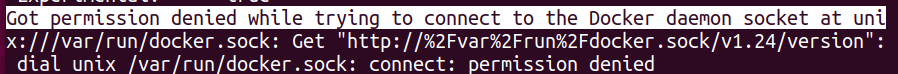
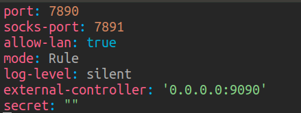
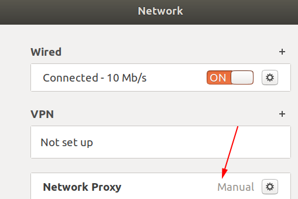
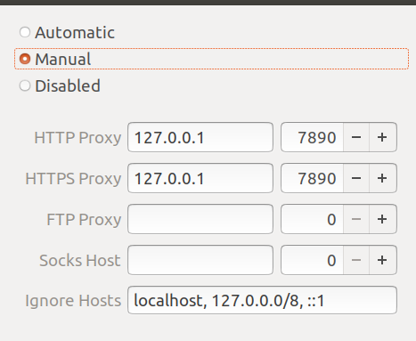
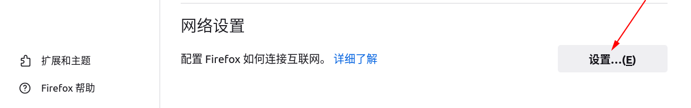
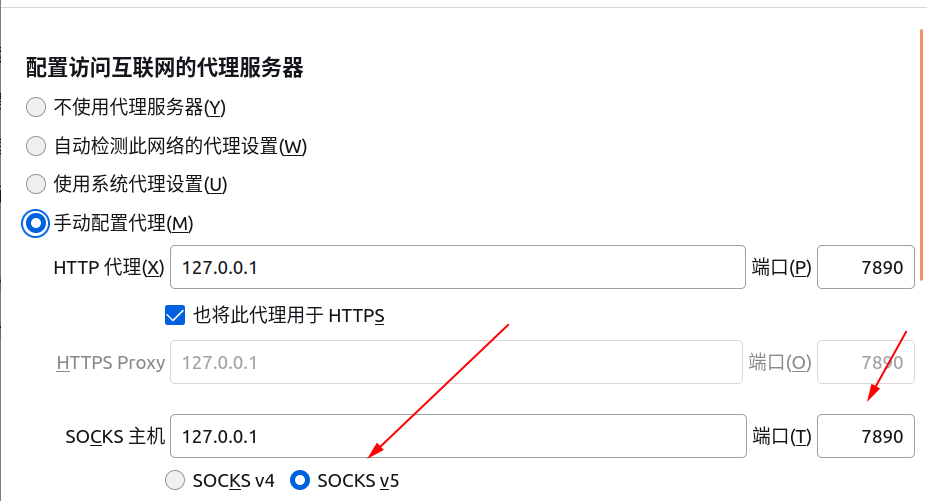

Docker
Docker
1、安装
镜像是一个只读模板，容器是一个运行实例
docker仓库存储docker镜像
1 | sudo apt-get install docker.io |

1 | sudo groupadd docker #添加用户组 |
2、容器化和Dockerfile
- 创建一个Dockerfile
- 使用Dockerfile构建镜像
- 使用镜像创建和运行容器
如果没有docker在浏览器外运行一个js文件需要：
- 安装操作系统
- 安装NodeJS
- 复制应用程序、依赖包、配置文件
- 执行启动命令运行程序
Dockerfile
1 | FROM node:14-alpine |
docker配置clash
1、拉取镜像
1 | su |
2、生成容器
1 | cd ~ |
dreamacro/clash是clash核心，里面运行着clash可执行文件。我们需要在它的容器里放一个config.yaml，即clash的配置文件，生成容器的时候我们和主机的$PWD/config.yaml进行了绑定。 haishanh/yacd是clash dashboard，haishanh做的第三方网页客户端
3、配置文件
直接将windows的clash中的配置文件复制，更改external-controller为’0.0.0.0:9090‘
然后这个allow-lan必须设置为true。allow-lan按我的理解就是看你局域网里的其他应用能不能访问你的7890端口，如果设置为false是无法实现代理的

4、进入dashboard
输入 主机ip：1234在浏览器窗口
在URL处输入 主机ip:9090 确保config.yaml配置正确，否则进不去
5、检测
窗口有东西则正确
1 | curl -x http://127.0.0.1:7890 https://www.google.com.hk/ |
6、给git设置代理
1 | git config --global http.proxy http://127.0.0.1:7890 |
7、配置Ubuntu与火狐
将clash装好，仍无法打开谷歌
需要在Ubuntu点击settings，选择network进行配置
 火狐浏览器找到设置
 All articles in this blog are licensed under CC BY-NC-SA 4.0 unless stating additionally.